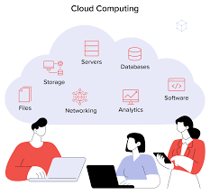

Project Overview

What is Cloud Computing?
Cloud computing delivers computing services—like servers, storage, databases, and software—over the internet, allowing users to rent resources instead of purchasing hardware. This model enables flexibility and cost savings.
Core Characteristics
- On-Demand Self-Service: Users can provision resources automatically.
- Broad Network Access: Services are accessible via standard devices.
- Resource Pooling: Multiple consumers share resources efficiently.
- Rapid Elasticity: Resources can be scaled quickly based on demand.
- Measured Service: Resource usage is monitored and billed accordingly.
Service Models
- IaaS: Infrastructure as a Service (e.g., AWS EC2).
- PaaS: Platform as a Service (e.g., Heroku).
- SaaS: Software as a Service (e.g., Gmail).
Deployment Models
- Public Cloud: Shared infrastructure (e.g., AWS).
- Private Cloud: Exclusive use by a single organization.
- Hybrid Cloud: Combination of public and private clouds.
- Multi-Cloud: Use of multiple cloud services simultaneously.
Key Technologies
- Virtualization: Enables multiple virtual machines on one server.
- Containerization: Packages applications for consistent deployment.
- Distributed Computing: Spreads workloads across multiple machines.
- APIs: Facilitate communication between services.
Advantages
- Cost Efficiency: Reduces capital expenditure.
- Scalability: Adjust resources based on need.
- Availability: High uptime guarantees from providers.
- Accessibility: Access from anywhere with internet.
- Automatic Updates: Providers handle maintenance.
Challenges
- Security Risks: Concerns about data breaches.
- Vendor Lock-In: Difficulty migrating between providers.
- Downtime Dependency: Reliance on provider uptime.
- Latency Issues: Performance affected by internet quality.
- Regulatory Compliance: Adhering to data storage regulations.
Security Considerations
Cloud security is a shared responsibility: providers secure infrastructure while customers manage data security, access controls, and compliance with standards like GDPR and ISO 27001.
Major Cloud Providers
- AWS: Largest provider with extensive services.
- Microsoft Azure: Strong enterprise integration.
- Google Cloud Platform: Known for data analytics and machine learning.
Other notable players include IBM Cloud and Oracle Cloud.
Group Members
M1
Member One
Role / Year
M2
Member Two
Role / Year
M3
Member Three
Role / Year
M4
Member Four
Role / Year